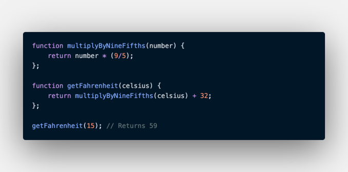

-
Buat sebuah function untuk toko online kita. Ikuti poin-poin dibawah ini:
- Function mempunyai 2 parameter yaitu nama pembeli dan produk yang dibeli
- Function akan mengembalikan nilai “Terima kasih (nama pembeli) telah membeli produk (produk yang dibeli)”
- Panggil function dengan menggunakan console.log()
-
Buat sebuah function helper untuk convert temperatur Celcius ke Fahrenherit dan sebaliknya. Ikuti poin-poin dibawah ini:
- Buat sebuah function helper lalu gunakan pada function converternya.
Seperti contoh dibawah ini. Jadi kita tinggal membuat function helper dan function utama untuk convert fahrenheit ke Celcius

-
Kita akan membuat program untuk menghitung umur kucing dalam usia manusia. Poin-poinya adalah:
- Pada usia 1 tahun, umur kucing adalah 15 kali umur manusia
- Pada usia 2 tahun, umur kucing adalah 24 kali umur manusia
- Pada usia 3 tahun (> 24 tahun) dan seterusnya umur kucing adalah 4 kali umur manusia. Jadi jika umur
kucing saat ini 4 tahun berarti dalam kalendar tahun kucing, umurnya adalah 32 tahun.
- Buat sebuah ARROW function yang menerima parameter umur kucing berdasarkan perhitungan tahun manusia.
-
Buat sebuah function untuk mengubah format semua string menjadi huruf kecil.
- Menerima 1 parameter string
- Gunakan single line block function
- Output adalah string yang telah diubah formatnya menjadi lower case
- Gunakan built in method string
-
Buat tampilan untuk seluruh soal diatas. Buat sekreatif teman-teman. 1 soal = 1 fitur = 1 page.